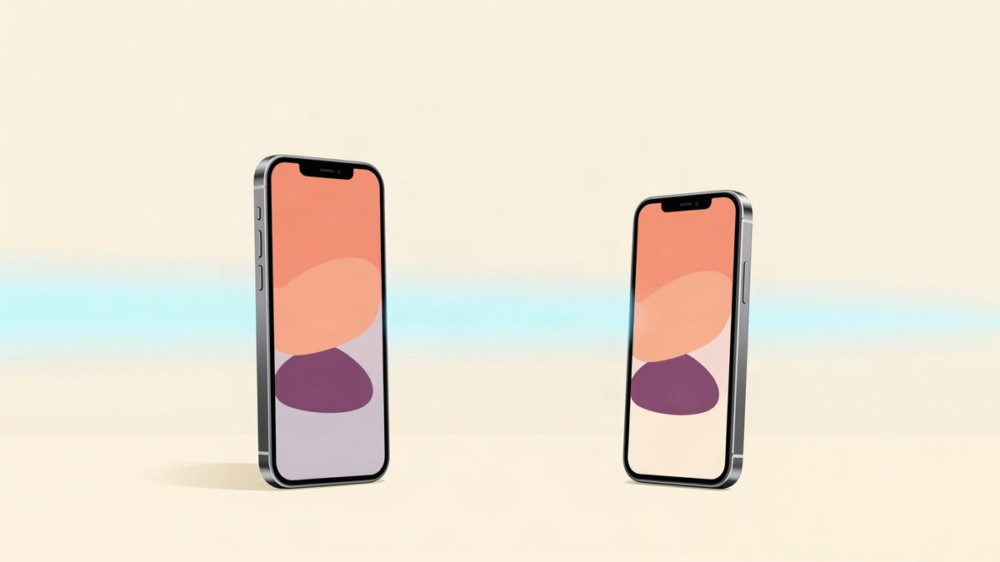

OPPO, vivo, Xiaomi i Honor uveli su prijenos datoteka dodirom telefona među markama

OPPO, Honor, vivo i Xiaomi pokrenuli su zajedničku uslugu za prijenos datoteka dodirom telefona među Android uređajima različitih marki. Prijenos ne troši mobilni promet i ne traži dodatnu aplikaciju, a slike i videi ostaju u originalnoj kvaliteti. Nije objavljeno koji modeli dobivaju funkciju ni hoće li stići izvan Kine.
Interconnection Alliance (互传联盟) objavila je da je usluga prijenosa datoteka dodirom telefona među različitim markama pokrenuta. Razvili su je OPPO, Honor, vivo i Xiaomi, a prema kineskom izvoru radi među Android telefonima tih proizvođača.
Odabereš datoteke koje želiš poslati i približiš dva telefona koja podržavaju funkciju. Prijenos se zatim izvodi sam, bez dodatnih koraka. Podržane su slike, videi i dokumenti.
Tri glavne značajke
Proizvođači ističu tri značajke. Prva je prijenos bez gubitka kvalitete: slike i videi šalju se u originalnoj kvaliteti, a dokumenti zadržavaju izvorni format, bez kompresije.
Druga je da prijenos ne troši mobilni promet. Datoteke idu izravno s uređaja na uređaj, bez clouda, pa se mobilni internet ne koristi.
Treća je da nije potrebna dodatna aplikacija. Funkcija postaje dostupna nakon system updatea, a app treće strane nije potrebna.
Zašto je to bilo potrebno
Dosad je prijenos datoteka u blizini između Android telefona različitih marki bio ograničen. Datoteke su se, ovisno o situaciji, morale slati preko društvenih mreža ili cloud servisa za pohranu. To je bilo nespretno, a slike i videi često su se usput komprimirali.
Tehnički timovi OPPO-a, Honora, viva i Xiaomija zajedno su izradili standard, razvili tehnologiju i odradili testiranje. Uskladili su i osnovnu specifikaciju prijenosa, pa funkcija radi među uređajima različitih proizvođača.
Izvor: MyDrivers (快科技)